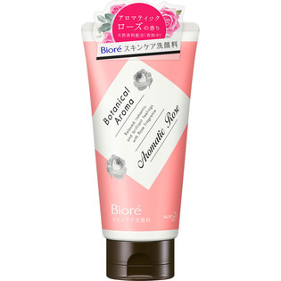

返回列表
产品名称：ビオレ スキンケア洗顔料 モイスチャーローズの香り

花王 ビオレ スキンケア洗顔料 モイスチャーローズの香り １３０Ｇ
メーカー 花王
JANコード 4901301350732
商品の特徴
洗うことで素肌の美しさをひきだします。
洗い上がり、いい肌ざわり。
化粧水のなじみがよくなります。
なめらかにのび広がる泡のヴェールで、しっとりなめらかな素肌に。
成分・分量
【成分】
水、グリセリン、ステアリン酸、ミリスチン酸、ラウレス－６カルボン酸、パルミチン酸、水酸化Ｋ、ラウリン酸、ソルビトール、ポリクオタニウム－７、ＰＧ、ＥＤＴＡ－２Ｎａ、メチルパラベン、香料
用法及び用量
【使用方法】
適量（２～３ｃｍ程度）を水やお湯で泡立てて洗い、あとはよく流します。